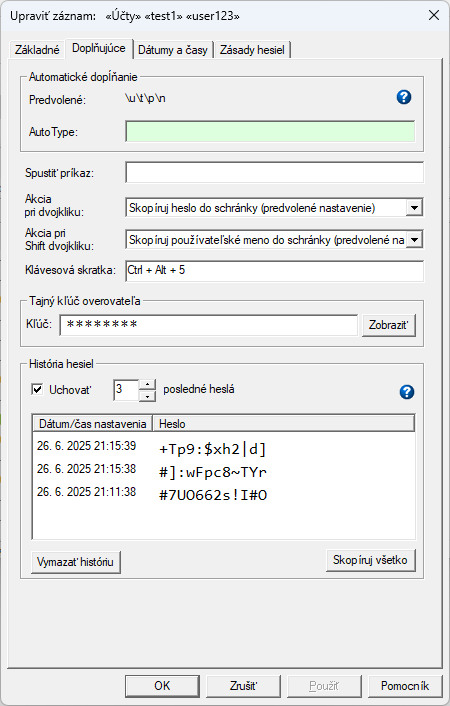

Password Safe vám umožňuje uchovávať niekoľko posledných hesiel, ktoré boli použité s daným záznamom, spolu s dátumom ich nastavenia. Toto je užitočné napr. ak systém kam sa prihlasujete vyžaduje pre zmenu hesla zadať aj pôvodné heslo; alebo ak sa vyžaduje návrat k predošlému heslu keď sa zmena hesla z nejakého dôvodu nepodarila. Táto funkcia zároveň zvyšuje celkové zabezpečenie hesiel, keďže predošlé heslo už nemusíte ukladať napr. do poľa Poznámky, čím potencionálne môže dôjsť k úniku informácií (napr. pri exporte dát si dáte pozor aby sa neexportovalo heslo ale pozabudnete vylúčiť aj pole Poznámky ktoré však pri niektorých záznamoch môže obsahovať heslá). História hesiel záznamu je prístupná na karte vlastností "Doplňujúce" v dialógovom okne Upraviť záznam.
Môžete nastaviť nasledujúce aspekty histórie hesiel:
Kliknutím na riadok v zozname nedávnych hesiel sa heslo zobrazené v tomto riadku skopíruje do schránky.
Kliknutím na toto tlačidlo sa vymažú predchádzajúce heslá uložené k tomuto záznamu.
Kliknutím na toto tlačidlo sa celý zoznam histórie hesiel (dátumy a heslá) skopíruje do schránky.